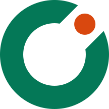

The symbol is a ring with one slot cut out and one dot stepping in: “one more player”. Hebrew-first UI, Latin wordmark.
Use the lockup by default. The symbol alone is for avatars, favicons and app icons. Do not recreate or retype the wordmark: its letters are custom outlines.
#047857 is only 3.41:1 on #0b1220, so on dark surfaces always use the on-dark files. CMYK/Pantone are not specified: match by eye from a proof.
White, #0b1220 (on-dark), brand green (white version), and single-colour black for print/fax/stamps. Photos: only where the area behind the logo is quiet and reaches 3:1.

#047857 background, mark inside the 66 dp safe zone.play-store-icon-512.png, full bleed, no rounded corners (Google masks it).favicon.svg auto-switches to the dark colours; favicon.ico as fallback.Also: don’t move or recolour the dot (except to one-colour), don’t fill the slot, don’t add a sport graphic, don’t set the wordmark in another font, don’t place the orange dot on green (use the white version).
| Folder | Contents |
|---|---|
svg/ | symbol, horizontal lockup, wordmark × color · on-dark · black · white · mono-green · mono-green-light. All outlined (no live text, no strokes). |
png/ | Transparent PNGs: symbol 1024 px, lockup 2400 px, in color / on-dark / black / white. |
favicon/ | favicon.svg (auto dark), favicon.ico (16/32/48), PNG 16–512, apple-touch-icon-180, maskable-512. |
android/ | Adaptive icon foreground / monochrome / background (SVG + 432 px PNG) and a legacy 192 px icon. |
play-store/ | play-store-icon-512.png (+ SVG source). |
Before launch: run a trademark search (Israeli registry, WIPO, USPTO) and a reverse-image search; this kit is not legal clearance. The wordmark is custom geometry, so no font licence applies to it.